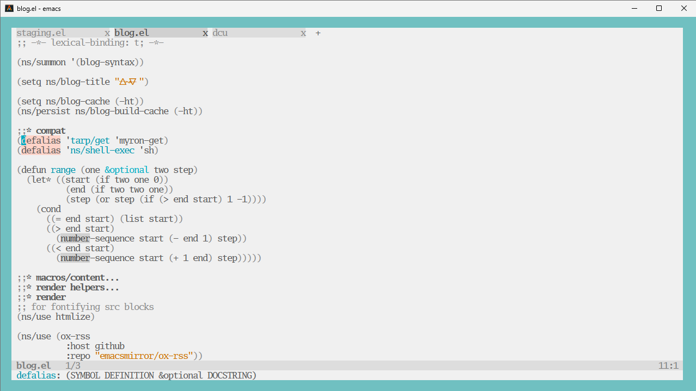

windoze tips

Windows is truly terrible, here’s some snippets of how I’m coping. It’s been 6 months so just trying to recall things:
- https://scoop.sh/
- WSL2 with kernel built with options for vcan + native docker (IE not the host docker integration thing)
- tui emacs + alacritty
- specifically NOT gui emacs, the wayland weston bridge thing is kinda buggy
- sanity: make sure alacritty is using your GPU drivers and not EG intel fallback ones
- start menu -> performance -> “adjust the appearance and performance options”
- uncheck everything except “smooth edges of screen fonts”
.wslconfig
[wsl2]
# don't auto shutdown
vmIdleTimeout=-1
memory=22GB
# was attempting to get udp forwarding with mirrored, didn't appear to work
# networkingMode=mirrored
debugConsole=true
# networkingMode = bridged
vmSwitch = Default Switch
# build file from kernel:
kernel=C:\\Users\\user\\vmlinux2
How can I fwd usb hardware?#
https://github.com/dorssel/usbipd-win/releases
from an admin cmd.exe:
usbipd list usbipd attach --wsl --hardware-id 0c72:000c usbipd attach --wsl --busid 2-11
THE CURSOR IS GONE#
Restart weston. From windows:
wsl --system -d Debian pkill weston
path compatibility#
lpath() {
# 'C:\Users\user\OneDrive - Corp\Documents'
# -> /mnt/c/Users/user/OneDrive - Corp/Documents
result=$(sed -e 's#C:\\#/mnt/c/#' -e 's#\\#/#g' <<< "$*")
echo "$result"
}
wpath() {
p=$(realpath "$*" | sed 's#/#\\#g')
echo "\\\\wsl.localhost\\Debian$p"
}